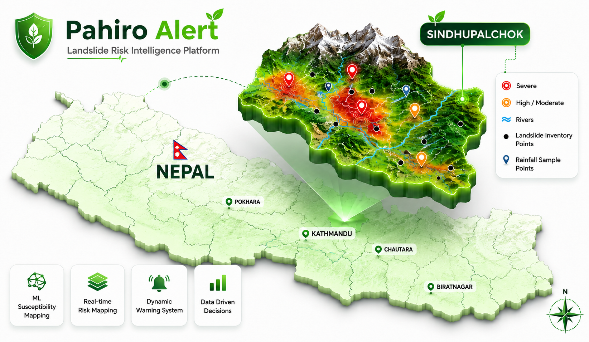

Pahiro Alert
Landslide Risk Intelligence Platform
ML-Powered Landslide Intelligence
Sindhupalchok District · Nepal
Classifying Landslides Before They Happen
Pahiro Alert turns environmental signals into clear action, helping teams detect risk and protect communities across vulnerable terrain.
